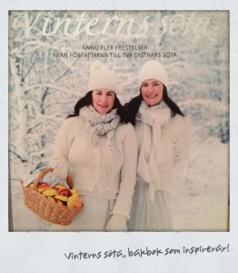
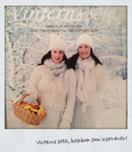
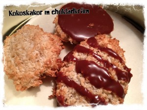

F
ör några år sedan fick jag den här jättefina bakboken i present: Vinterns söta av systrarna Eisenman.
Varje år kring jul tar vi fram boken för att få inspiration till julbaket!:)
I år valde vi, förutom den självklara knäcken, att baka kokoskakor med chokladkräm.
De blev väldigt goda så varsågod, här kommer receptet:
10 stora eller 20 små kakor
3 äggvitor
2 dl strösocker
7 dl kokosflingor
Chokladkräm
100 g mörk choklad (Tips! Vi använde ”Green and black” mjölkchoklad, blev också gott) 1/2 dl vispgrädde 25 g smör 
I år valde vi, förutom den självklara knäcken, att baka kokoskakor med chokladkräm.
De blev väldigt goda så varsågod, här kommer receptet:
10 stora eller 20 små kakor
3 äggvitor
2 dl strösocker
7 dl kokosflingor
Chokladkräm
100 g mörk choklad (Tips! Vi använde ”Green and black” mjölkchoklad, blev också gott) 1/2 dl vispgrädde 25 g smör 
Sätt ugnen på 175 grader
1. Rör ihop äggvitor, socker och kokos.
2. Rulla till små bollar, lägg på bakplåtspappersklädd plåt. Platta ut till runda kakor.
3. Grädda mitt i ugnen ca 10 minuter tills kakorna fått lite färg.
4. Smält chokladen tillsammans med smör och grädde i en skål över sjudande vattenbad.
5. Rör ihop till en slät kräm. Låt krämen svalna i rumstemperatur ( vi ställde in den en stund i kylen också, sen den svalnat).
6. Bred lite chokladkräm på undersidan av en kaka. Tryck försiktigt ihop med en annan kaka.
(Så gjorde vi istället: De blev alldeles för mäktigt med dubbla kakor med
chokladkrämen emellan, så vi valde att ringla eller klicka på choklad på en kaka i taget och inte trycka ihop två och två.)
7. Ställ in kakorna i kylskåpet stund innan servering.
1. Rör ihop äggvitor, socker och kokos.
2. Rulla till små bollar, lägg på bakplåtspappersklädd plåt. Platta ut till runda kakor.
3. Grädda mitt i ugnen ca 10 minuter tills kakorna fått lite färg.
4. Smält chokladen tillsammans med smör och grädde i en skål över sjudande vattenbad.
5. Rör ihop till en slät kräm. Låt krämen svalna i rumstemperatur ( vi ställde in den en stund i kylen också, sen den svalnat).
6. Bred lite chokladkräm på undersidan av en kaka. Tryck försiktigt ihop med en annan kaka.
(Så gjorde vi istället: De blev alldeles för mäktigt med dubbla kakor med
chokladkrämen emellan, så vi valde att ringla eller klicka på choklad på en kaka i taget och inte trycka ihop två och två.)
7. Ställ in kakorna i kylskåpet stund innan servering.

T v Våra kokoskakor
Det är så fina bilder i boken och hur många goda recept som helst! Inte bara till jul, utan även till kalas och andra festliga tillfällen.
Det är så fina bilder i boken och hur många goda recept som helst! Inte bara till jul, utan även till kalas och andra festliga tillfällen.
Kategori »Allmänt